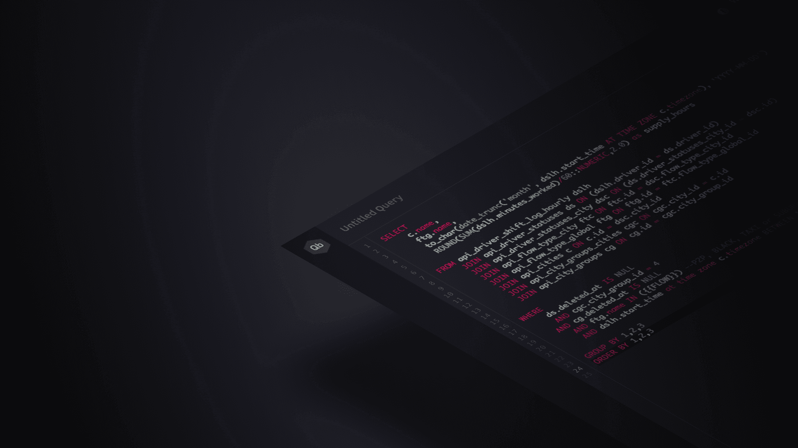
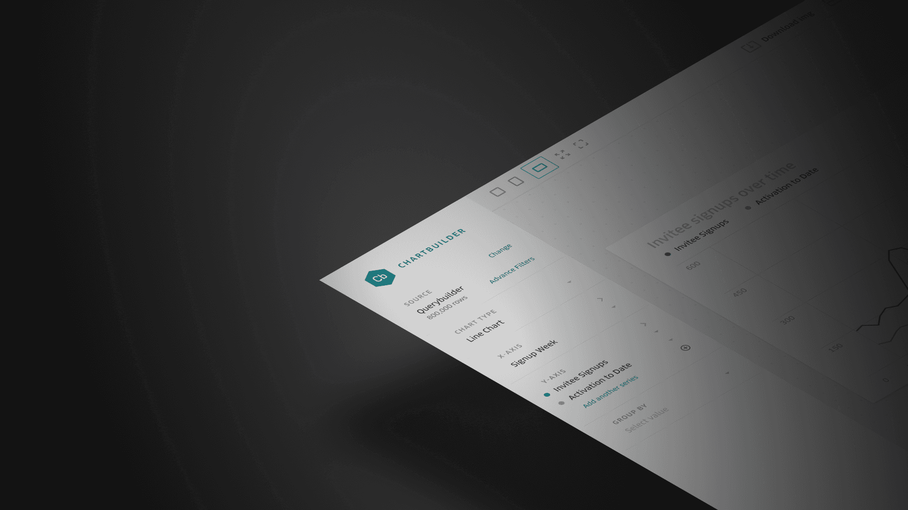
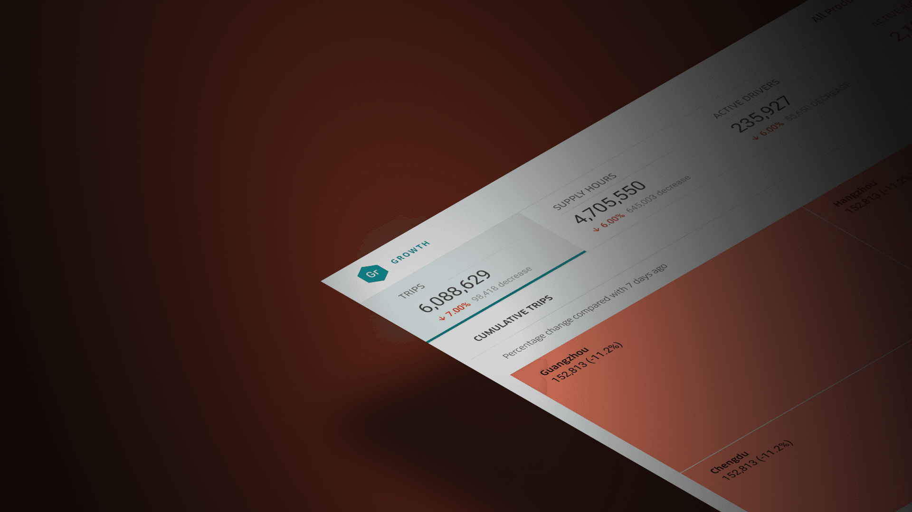
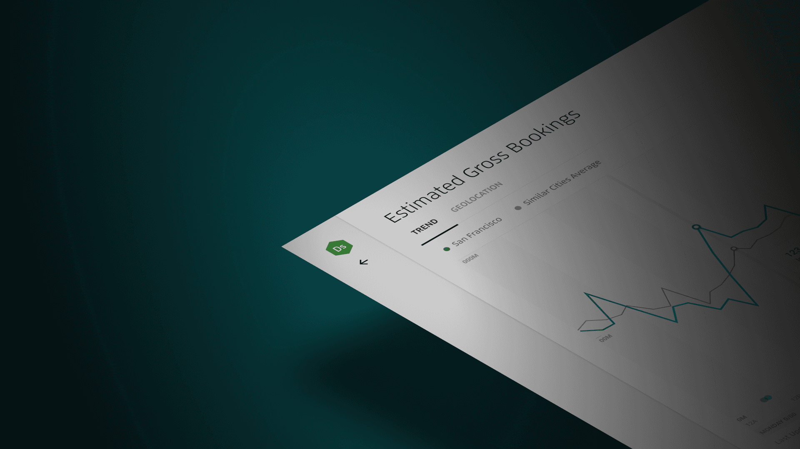
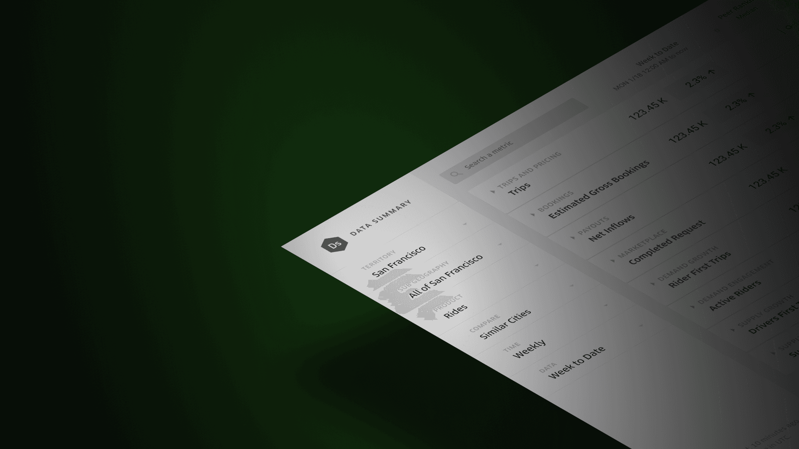

Uber Data Intelligence
Our mission is to empower decision-makers with instant access to critical insights that drive Uber’s success. By creating and delivering powerful dashboards, we unlock the full potential of data, turning it into a catalyst for smarter, faster decisions. We build the data pipelines that power these dashboards, equip teams with cutting-edge technology, and ensure vital business information is at everyone’s fingertips.
I lead the design efforts to create a scalable, intuitive data environment that transforms complex data into clear, actionable insights. My work is centered on making data accessible, approachable, and impactful for everyone across the organization. Through my designs, I help teams harness the power of data to make informed, strategic decisions that propel Uber forward, fostering innovation and growth at every level.

Query Builder
Effortlessly dive into advanced analyses and unlock game-changing insights with Uber's powerful data platform.

Chart Builder
Instantly turn any Uber data table into an engaging, dynamic chart within seconds.

Dashboard Builder
Build clear, interactive reports and dashboards that invite users to explore data in depth and uncover more insights.
Real Time Monitoring
Provides live insights, empowering immediate responses to optimize performance in real-time as events unfold.

Financial Forecasting
Precisely forecast Uber's long-term financial and operational growth across marketplaces.

Executive Summaries
Instantly access powerful data insights at a glance, empowering smarter, faster decisions to drive growth forward.
Design Notables
Precision Insights Delivery
Ensure the right information reaches the right people, at the right time and place, driving impactful decisions and project success.
Unmatched Data Scale
Experience the incredible volume of data at Uber, unlocking vast opportunities for insights and innovation.
User-Centric Data Tool Design
Through extensive testing, user observation, and a deep understanding of daily workflows and business goals, we create tailored data tools with effective, use case-specific visualizations.
Real-Time Visuals
Instantly elevate any dashboard with dynamic, real-time views that bring data to life and enable faster, more informed decision-making.